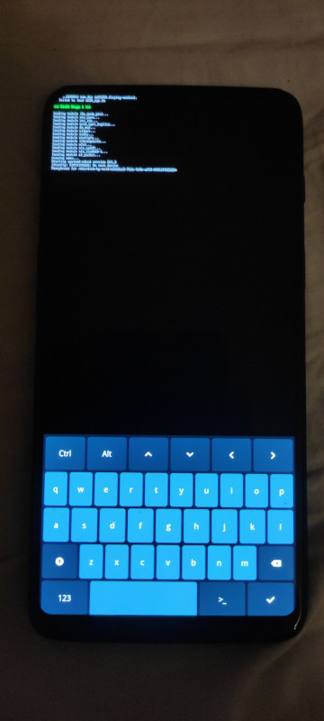
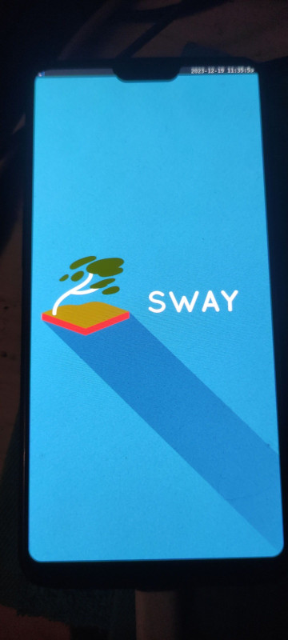

Did you know you can run NixOS on phones? I certainly did. I have experience making NixOS run on Oracle VPS (I made it use a custom partition scheme, which Oracle normally doesn't provide, not for free, anyway), on various ARM boards (it's nice when the boards support UEFI, but often they don't). I'm running NixOS on my laptop (x86_64), on my router (Banana Pi BPI-R3, requires U-Boot and a custom kernel config; the router config used to run on an x86_64 laptop), on my server/NAS (Radxa Rock 5A, luckily it provides UEFI and almost works well on the mainline kernel with default config; the server config used to run first on an x86 Oracle VPS, then on an arm64 Oracle VPS, then on the same laptop that was my router), and my phone is the last missing piece in this chain, especially since I wanted to ditch Android even before I became a Nix cultist (or a communist, for that matter).
I didn't want to use a Pinephone{, Pro} as a daily driver. I have hands-on experience with the original Pinephone. First of all, it seemed pretty sluggish. I know that theoretically it can change, and I'll be using a WM instead of a DE either way, but it still felt quite annoying. Worse yet, the battery life is pretty bad, and while suspend probably does help, if I were to use my phone for listening to music or playing Youtube videos in the background, suspend would be useless and it'd still die pretty quickly.
Pinephone Pro does solve the first problem, which led me to buy it in early 2022. While I got really lucky with the timing, as Visa/MasterCard stopped working in Russia shortly after, DHL unfortunately misdelivered the package. Worse yet, Pine64 was completely unresponsive, they took so long to get to this case that the DHL refund period ended, and only over a year later did I get a 50% refund from Pine64.
This situation, along with the fact Pinephone Pro's battery life is still pretty bad (I wanted to solve this with the keyboard case, but I heard that doesn't help that much either), led me to seek alternatives. The only other phone "well supported" by Mobile NixOS is OnePlus 6. OnePlus 6T has more or less the same support in the broader mobile Linux ecosystem, so I could simply contribute to Mobile NixOS to improve OnePlus 6T support - after all, it's a small upgrade over OnePlus 6 with an OLED screen, but it doesn't have a headphone jack - so it was a non-option for me, especially on mobile Linux where USB adapter compatibility is dubious (I haven't used Bluetooth ever since school days when we sent files to each other, and I don't plan to).
The first OnePlus 6 I bought ended up having broken Wi-Fi, so I had to return it. After I ordered the second one from a different seller, they said it's not in stock (!) and the order just timed out in a few weeks. Nothing went right with this phone, even when I tried buying a case, they sent me a case for a different phone. That got me pretty demotivated, at first I even tried buying a second-hand OnePlus 6 (at least if it's used it means it's usable, unlike the one with broken Wi-Fi), but on the third time, finally, I got a new (allegedly produced in 2022, I have no idea whether that's true or why they would still produce a 5 year old phone except maybe for spare parts) OnePlus 6 to tinker with, and I have full intentions of making it my daily driver. After all, I've been working on rofi-menu-stack and other components of my future hypothetical mobile UI stack for exactly that purpose. My current phone (Redmi K30 5G) is one year newer, supports 5G and is 120Hz, but it's a small sacrifice for running mainline Linux with the familiar userspace.
So the first thing I have to do to make the phone work is install an OS on it. How do I do it? Mobile NixOS has me covered, it should be quick and simple to build an image using its tooling and flash it, right?
Wrong! It actually uses a premade partition scheme (not sure whether it's configurable/how configurable it is), but I want full disk encryption, and it definitely doesn't have built-in support for generating LUKS images. And overall, I like to have full control and understanding of my system - that's why the distro I used before NixOS was Arch.
So, what do I do? Obviously, sidestep the entire thing and install NixOS with UEFI instead! Luckily, there's a UEFI implementation for OnePlus 6. In theory, it may support booting NixOS from a USB OTG drive, or a partition on the device itself! Let's check that theory.
...But first - the "new" phone from China came with a weird English ROM that says it's "OxygenOS" (OnePlus's official global version of Android), but doesn't want to OTA (or manually) update to the latest version. Yes, Chinese sellers love to flash dubious global versions when selling phones overseas - I'd really rather they didn't, but what's done is done, now I have to find a way to update it, because generally all custom flashing comes after updating your phone to make sure you get the latest firmware and etc.
No problem - all I have to do is just download the original
ROM
from Random People on the Internet, flash it to my to-be primary
communications device (what could possibly go wrong), and we're good. I
will use edl, which is a very
useful Linux alternative to Windows GUI programs for interacting with
Qualcomm devices in EDL mode, and
oppo-decrypt, which is
necessary for decrypting the ROM files before flashing - both are
written by the same author, Bjoern Kerler!
The factory ROM contains a bunch of metadata, the proprietary Windows
tool for flashing it, and the ROM itself -
enchilada_22_J.50_210121.ops. First, I have to convert the .ops
image into something I can flash with EDL. The first step is obviously
decrypting it - python3 opscrypto.py <image>.ops --extractdir=../out
(surprisingly, extractdir seems to be relative to the image file). Now
we got a directory with a bunch of raw image files, the .elf loader
binary used for interacting with the device (I don't need it since edl
has a built-in loader for OnePlus 6T, which works for OnePlus 6 as
well), a bunch of UFS provisioning files like provision_samsung.xml
(they state that "provisioning UFS is an irrecoverable one time
operation", so I decided not to inquire further), and most importantly
settings.xml, which contains the actual info about what partitions go
where. Here's a small sample:
<?xml version="1.0" encoding="utf-8" ?>
<Setting>
<!-- snip -->
<Program0>
<program SECTOR_SIZE_IN_BYTES="4096" file_sector_offset="0" filename="" label="ssd" num_partition_sectors="2" partofsingleimage="false" physical_partition_number="0" readbackverify="false" size_in_KB="8.0" sparse="false" start_byte_hex="0x6000" start_sector="6" FileOffsetInSrc="0" SizeInSectorInSrc="0" SizeInByteInSrc="0" Sha256="0" />
<program SECTOR_SIZE_IN_BYTES="4096" file_sector_offset="0" filename="persist.img" label="persist" num_partition_sectors="8192" partofsingleimage="false" physical_partition_number="0" readbackverify="true" size_in_KB="32768.0" sparse="true" start_byte_hex="0x8000" start_sector="8" FileOffsetInSrc="1377" SizeInSectorInSrc="65536" SizeInByteInSrc="33554432" Sha256="" />
<program SECTOR_SIZE_IN_BYTES="4096" file_sector_offset="0" filename="" label="misc" num_partition_sectors="256" partofsingleimage="false" physical_partition_number="0" readbackverify="false" size_in_KB="1024.0" sparse="false" start_byte_hex="0x2008000" start_sector="8200" FileOffsetInSrc="0" SizeInSectorInSrc="0" SizeInByteInSrc="0" Sha256="0" force_erase="true" />
<!-- snip -->
</Program0>
<Patch0>
<patch SECTOR_SIZE_IN_BYTES="4096" byte_offset="2088" filename="gpt_main0.bin" physical_partition_number="0" size_in_bytes="8" start_sector="2" value="NUM_DISK_SECTORS-6." what="Update last partition 17 'userdata' with actual size in Primary Header." />
<patch SECTOR_SIZE_IN_BYTES="4096" byte_offset="2088" filename="DISK" physical_partition_number="0" size_in_bytes="8" start_sector="2" value="NUM_DISK_SECTORS-6." what="Update last partition 17 'userdata' with actual size in Primary Header." />
<!-- snip -->
</Patch0>
<!-- snip -->
</Setting>
The edl tool doesn't support this file format, but you know what it
does support? The QFIL file format, with rawprogram and patch XML
files! Luckily, I had a QFIL flash for a different Qualcomm phone lying
around, and using it as reference I made the following Python script for
converting settings.xml to the QFIL format:
with open('settings.xml', 'rt') as f:
xml = f.read()
for intag, outtag, out in (('Program', 'data', 'rawprogram'), ('Patch', 'patches', 'patch')):
for pr in xml.split(f'<{intag}')[1:]:
num, data = pr.split('>', 1)
lines = filter(lambda x: x, map(lambda x: x.strip(), data.split(f'</{intag}')[0].split('\n')))
with open(f'{out}{num}.xml', 'wt') as f:
print(f'<?xml version="1.0" ?>\n<{outtag}>', file=f)
for line in lines:
print(' ', line, file=f)
print(f'</{outtag}>', file=f)
After running this I got 6 rawprogram+patch file pairs, which I simply
flashed with edl qfil rawprogram<num>.xml patch<num>.xml . (after
booting the phone in EDL mode of course). A few hours of 90% single-core
CPU load (no idea why edl needs that, but whatever) later, I finally
got the official ROM installed... it's still on Android 10, but that's
only one OTA update away from the "latest and greatest" Android 11 ROM.
Some 15 hours after getting the phone, after utilizing lots of domain specific knowledge, we've reached the starting point. Isn't Android just wonderful?
Now that we have successfully installed the latest stock ROM through blood, sweat and tears (preferably to both A and B slots, luckily the OnePlus update UI offers local zip installation, so we can tell it to install the latest ROM again manually), we can proceed to uninstall this useless Google-infested crap (plus as I updated it from Android to 8 to 10 to 11, I could see how progressively worse the UI got; though this is mostly OnePlus's fault as the AOSP UI didn't change that much). In my case, I want to run UEFI (prerably I want to try running GRUB or systemd-boot). Luckily, there's a guide on the postmarketOS wiki. I don't need dualbooting with Android, so I just have to follow the "Erasing unused partitions/Custom formatting" section... Let's give it a go!
(Pretending I didn't just flash the new stock OS) first, I have to
unlock the bootloader by enabling OEM unlocking in developer settings
and running fastboot flashing unlock_critical and fastboot flashing
unlock in fastboot (this allows flashing all partitions, and I may just
need it, who knows).
Now onto the actual flashing - partitioning requires a decent recovery; TWRP is my usual go-to because it has a good feature set and I'm familiar with it.
In the recovery, I removed the partitions 13-17 (system_{a,b},
odm_{a,b}, userdata) and created two partitions (boot and root).
I forgot to unmount userdata before flashing, so gdisk printed some
errors, but surely it will be fine.
Now, before flashing UEFI, let's make sure it works via fastboot boot
uefi.img... what? "Failed to load/authenticate boot image: Load Error"?
Let's try booting the recovery... it doesn't boot either? Ugh, what went
wrong? PMOS wiki does mention "on oneplus 6t you can only can remove
/dev/sda17. Removing /dev/sda13-16 will cause the bootloader cant boot
anything", but I have the normal OnePlus 6!
Fine, let's experiment. First, I have to reinstall the stock OS via
EDL... but let's drop userdata from the xml files, I don't want to flash
an empty 120GB partition.... uh? edl fails with DeviceClass -
USBError(5, 'Input/Output Error'). Maybe switching the loader will
help? Nope, the one bundled with the firmware doesn't work either...
We're off to a great start. That's enough for today...
After booting up a Windows VM and passing the phone through to it, I was
successfully able to use MSM Flash Tool - guess edl still has some
bugs. After unbricking the phone, let's repeat the process, but step by
step, making sure everything works after every step.
So, first, let's install the OTA update again (twice, i.e. in both
slots) (now that I think of it, I should've tried updating from Android
8 straight to 11, not from 10 to 11, maybe that's why it didn't work the
first time)... Now, after using edl before, bootloader lock state was
preserved, but for some reason the MSM Flash Tool locked the bootloader,
so let's unlock it again.
Now I'll remove partitions step by step, starting with userdata...
So, with more info on what can and can not be done (and no clues
regarding the reasons behind that), I do what I realized I should've
tried, and download the oldest image I've found to flash with edl, to
then update with the OTA update. After all, whoever wrote the article on
PMOS wiki managed to do it somehow, right? If that doesn't work, I can
try deleting the partitions after installing Android 10 or Android 9.
Um... this time MSM Flash Tool doesn't work either? this is...
surprising. Just to be sure, what about edl? Still no? Okay, that's to
be expected... Let's pray and try again! Maybe waiting after plugging
the phone will help? Nope, edl just hangs! But hanging is not
crashing, so this is a new reaction - let's try again... It worked! And
immediately started spamming DeviceClass - USBError(19, 'No such device
(it may have been disconnected)'). Well, seems like the USB cable is at
fault here, not the software! I retract all my statements about edl
having bugs (lol). Let's try switching from the official cable to some
other... it works!
Android 8 is flashed... "System update installation failed"? I see, so I have to flash Android 8 -> 9 -> 11. That works for me.
Now, for science, let's see if it boots without system_b when slot B
is selected... okay, the answer is "No". I see! Now let's try booting
without the system partition after flashing an older Android version.
Doesn't work on Android 10 (this is a single line in a blog post, but it took a long time to check...). As for Android 9... let's actually change the method, I don't want to use old firmware. Instead, let's progressively remove files from the system partition until it doesn't boot anymore (it's fine because we have 2 system partitions, so we can restore files). Or maybe it will work with no files and it just wants any system partition to be there, who knows?
Full file list is:
acct bugreports d debug_ramdisk etc linkerconfig mnt op_plat_sepolicy.cil proc sdcard system
apex cache data default.prop init lost+found odm persist product storage system_ext
bin config data_mirror dev init.environ.rc metadata oem postinstall res sys vendor
Let's start by removing all of them and see where this goes... it boots! Though it seems TWRP doesn't handle this well, as it's now stuck on the splash screen. That's perfectly fine, let's try OrangeFox... it works. Now when we nuke the second system partition... it still works.
So, looks like the system partition is mandatory, but its contents
don't matter at all. But to what extent? Will it work if we zero out the
partition? The answer is "yes, but now OrangeFox is stuck on the splash
screen too, though it still runs adbd so we're good". Will it work with
a 1 sector system partition? The answer is "no, and neither slot works
anymore for some reason". Ugh. Here goes another edl reflash... Actually
I'm tired of flashing everything, let's just flash the relevant parts
({rawprogram,patch}0.xml)... ah, I've updated to Android 11 while the
EDL firmware is Android 10 so I need a full reflash... fine.
Through trial and error (lots of it), it turned out the contents indeed
don't matter, but the partition size does. If I increase it by 1 sector,
it doesn't boot. If I decrease it by 1 sector, it doesn't boot.
Furthermore, while I'm allowed to remove all files from it, zeroing it
out is not allowed (terms and conditions apply?). Surprisingly, after
zeroing the system partition out and rebooting, it wasn't all zeroed
out... it somehow created an ext2 filesystem! If I mkfs.ext2 the
partition, it doesn't boot. Looks like the metadata has to match as
well. e2label <original image> returned /, and, sure enough, it
booted fine after doing changing the label to /. Hm, what about
changing both the size of the partition and the size of the
filesystem? Nope, still doesn't work. The filesystem size doesn't
matter, it can be as small as ext2 allows (56 blocks for 4096-byte
blocks), but the partition size has to be as specified. Uh... can I
create two overlapping partitions? It looks like I can, but gdisk
doesn't let me, so I'd have to patch its source or play with hex bytes.
Can I have two filesystems in the same partition? Well if I created such
a monster one filesystem would probably eventually overwrite the other,
so nope. Oh! Look at cryptsetup-open(8)
Use --offset to specify device offset. Note that the units need to be specified in number of 512 byte sectors.
This is... fine. Perfectly fine. This isn't just me spending hours looking into something that doesn't matter at all, you see, this gets me 5.6 additional gigabytes of storage!!! This is massive!!!
It's nice to have 2 boot slots (each slot only has 1 boot image; on [most of?] my previous phones boot and recovery partitions were separate, but here they seem to be combined, they share a kernel but have different initrds, what the fuck), so I could e.g. have UEFI in one slot and recovery in another.
That said, I have fastboot access which allows me to troubleshoot
updates properly. So, we can remove system_b, and overwrite system_a
with a super small ext2 partition, so we could potentially use
cryptsetup with an offset later. I'm just petty like that... nope
doesn't work. Turns out that, while yes I can push a filesystem with a
smaller size, the bootloader just doesn't care - it expects a 2.8GB
ext2 filesystem. Hence, if I zero the partition out before putting a
200KB file system there, it simply won't boot.
Fine, I give up, I'll keep system_a, whatever, you win, Qualcomm, you
can have your 2.8GB and put it in... your phones (I could still store an
image file there and create a loop device... just saying). I'm really
curious what kind of stuff the bootloader does to the system
partition... but at this point I just want to move on. Ugh, this is so
frustrating. Let's just try flashing LineageOS, maybe it doesn't use
ext2 for its system partition (something tells me it does)?
Wait... LineageOS installation instructions tell you to use fastboot
--disable-verity --disable-verification flash vbmeta stock_vbmeta.img.
Well, this is embarrassing. This seems obvious in hindsight - disable
verified boot to be able to change (or remove) the system partition. The
error "Failed to load/authenticate boot image: Load Error" makes sense
too (though it's stupid how it for some reason also applied to fastboot
boot). Could we make this work?
...Nope. Well fuck, I give up for real this time. Maybe someone else can tell me what the hell is going on here. If this is indeed verified boot, then there could be additional data after the ext2 filesystem.
Let's forget about this stupid system_a partition and do something actually useful, like create a FAT32 UEFI partition and a bigger root partition. For now, it seems like a good idea to also create an 8GB partition at the end of /dev/sda that we could delete later - we can flash isos there (if other methods, like USB OTG, fail).
Number Start (sector) End (sector) Size Code Name
...
13 85824 817983 2.8 GiB FFFF system_a
14 817984 1080127 1024.0 MiB EF00 EFI
15 1080128 28340218 104.0 GiB 8300 ROOT
16 28340220 30437370 8.0 GiB EF00 ISO
...and let's stop on this depressing note for today.
Just kidding, I'm not one to give up so easily! I've asked
Casey, who I thought would understand why this
happens, but she had no idea. The only logical explanation I have is
that the phone is of a new revision, so it behaves differently from
older phones. I don't like this explanation, because the EDL firmware
contains abl.elf in rawprogram4.xml, which is the actual
bootloader that's most likely responsible for this check, and it's the
same across all OnePlus 6's, but it's the only explanation I have at the
moment.
Let's look into this further. First, I still haven't tried flashing images via fastboot. Second, clearly the system partition size isn't fixed (even though I can't change it) - it was different on Android 8 and Android 10... Probably, I haven't checked. What's going on here? Logically, there may be some trailing data... well, let's look into what the Android community has come up with.
The Android community is innovative as always - their firmware, with all the Google apps, is getting larger by the day, to the point it stopped fitting on the stock partition. They had to find a way to extend it, and find it they did.
This is some Android-specific partition scheme, called "dynamic partitions" - basically... Android's analog of LVM? As Google docs say:
With dynamic partitions, vendors no longer have to worry about the individual sizes of partitions such as system, vendor, and product. Instead, the device allocates a super partition, and sub-partitions can be sized dynamically within it.
More importantly, postmarketOS wiki says:
On devices with dynamic partitions, either there isn't a GPT system partition, or in the case of retrofit, the flashing interface prevents flashing to the GPT system partition without command line options like
--force.[...]
On retrofit devices, the device manufacturer has the option to specify different super partitions. [...] If it is unspecified, then it is probably "system"
And switching to Google docs again:
The bootloader must not allow the flashing or erasing of dynamic partitions and must return an error if these operations are attempted. For retrofitted dynamic partition devices, the fastboot tool (and bootloader) supports a force mode to directly flash a dynamic partition while in bootloader mode. For example, if system is a dynamic partition on the retrofitted device, using the fastboot --force flash system command enables the bootloader (instead of fastbootd) to flash the partition.
Fuck you Google, don't lock devices even further! Though, wouldn't you be able to flash it through recovery?
...either way, it looks like the system partition will grow (?), and be
changed to use this pseudo-LVM and include vendor and other partitions?
That's not ext2, and the size will change, so I'm curious how the
bootloader will react to this. If this works, it seems like it might be
a step in the right direction, though it surprises me it includes the
vendor partition too. The relevant part of the guide seems to be
fastboot wipe-super. I think it's best to apply this on a clear
system, so here I go flashing Android 10 via EDL and updating it to
Android 11 twice for the millionth time. By the way, I decided to switch
from Renegade Project to Casey's version of U-Boot, which should support
UEFI too.
So, let's try this... aha, the partition doesn't have a filesystem now. The question is of course, will it boot without the partition?
...and then, to my horror, I realized that this all doesn't matter, and the problem is very simple - there are two partitions - vbmeta_a and vbmeta_b, while I only flashed "vbmeta" before, which refers to the current slot. Of course it's a verified boot problem - god damn it. After flashing vbmeta properly, I could finally remove the system partition. Fuck this.
But I'm done! I figured this out! Let's restore the vendor partition that we now know doesn't need to go to the dynamic partition (who knows, I might need what's in the vendor partition) with hopefully the last EDL flash I do [narrator voice: at the time, she still had no idea what's about to come], and go onto building the kernel and U-Boot.
Let's quickly copy the config options from here:
linux_enchilada = linux_testing.override {
# to disallow setting config options that don't exist
ignoreConfigErrors = false;
kernelPatches = [ ... ];
structuredExtraConfig = with lib.kernel; {
...
QCOM_LLCC = yes;
QCOM_OCMEM = yes;
...
DRM_MSM = yes;
...
};
};
and... an error!
GOT: CONFIG_DRM_MSM:
GOT:
GOT: DRM/KMS driver for MSM/snapdragon.
GOT:
GOT: Symbol: DRM_MSM [=m]
GOT: Type : tristate
GOT: Defined at drivers/gpu/drm/msm/Kconfig:3
GOT: Prompt: MSM DRM
GOT: Depends on: HAS_IOMEM [=y] && DRM [=y] && (ARCH_QCOM [=y] || SOC_IMX5 || COMPILE_TEST [=n]) && COMMON_CLK [=y] && IOMMU_SUPPORT [=y] && (QCOM_OCMEM [=m] || QCOM_OCMEM [=m]=n) && (QCOM_LLCC [=m] || QCOM_LLCC [=m]=n) && (QCOM_COMMAND_DB [=y] || QCOM_COMMAND_DB [=y]=n) && PM [=y]
GOT: Location:
GOT: -> Device Drivers
GOT: -> Graphics support
GOT: -> MSM DRM (DRM_MSM [=m])
GOT: Selects: IOMMU_IO_PGTABLE [=y] && QCOM_MDT_LOADER [=m] && REGULATOR [=y] && DRM_DP_AUX_BUS [=m] && DRM_DISPLAY_DP_HELPER [=y] && DRM_DISPLAY_HELPER [=m] && DRM_KMS_HELPER [=y] && DRM_PANEL [=y] && DRM_BRIDGE [=y] && DRM_PANEL_BRIDGE [=y] && DRM_SCHED [=m] && FB_SYSMEM_HELPERS [=y] && SHMEM [=y] && TMPFS [=y] && QCOM_SCM [=y] && WANT_DEV_COREDUMP [=y] && SND_SOC_HDMI_CODEC [=m] && SYNC_FILE [=y] && PM_OPP [=y] && NVMEM [=y] && PM_GENERIC_DOMAINS [=y]
GOT:
GOT:
GOT:
QUESTION: MSM DRM, NAME: DRM_MSM, ALTS: M/n/?, ANSWER: y
repeated question: MSM DRM at /nix/store/k5nz4dqvifjqgr2m3ya4n1012jnn9zjb-generate-config.pl line 88.
Error in reading or end of file.
Repeated question means the option is invalid. In this case, the Kconfig
script asked about what to do with DRM_MSM, and we answered "yes", but
this is an invalid option, because QCOM_LLCC and QCOM_OCMEM, which
are DRM_MSM's dependencies, are set to "module", so DRM_MSM can only
be compiled as an external module as well, not built into the kernel. The
problem is, we clearly set QCOM_LLCC and QCOM_OCMEM to yes in the
Nix config! The Kconfig script simply hasn't asked about it yet.
This means the Kconfig script doesn't do toposort properly for some
reason (perhaps because of the complex (QCOM_OCMEM [=m] || QCOM_OCMEM
[=m]=n) condition? Or maybe it isn't supposed to do toposort and all
and only works by accident? Okay, I doubt it's that bad), and asks the
questions in the wrong order. In that case we can just change the
default value:
postPatch = ''
substituteInPlace arch/arm64/configs/defconfig \
--replace CONFIG_QCOM_LLCC=m CONFIG_QCOM_LLCC=y \
--replace CONFIG_QCOM_OCMEM=m CONFIG_QCOM_OCMEM=y
'';
...that didn't work. Is it because postPatch isn't used by the config?
Let's inspect it:
$ nix derivation show /nix/store/2i1cj71km87ypkdv6193qkqqjcdgv1av-linux-config-6.7-rc2.drv | grep substituteInPlace
"postPatch": [...] substituteInPlace \"$file\" \\\n --replace NIXOS_RANDSTRUCT_SEED \\\n [...]
Yes, it isn't! The only usage of substituteInPlace is completely
irrelevant. Reading nixpkgs sources, it seems there's no way to set
postPatch. I could open a PR... or I could just create a "proper"
patch to put in kernelPatches... that I will inevitably have to update
later, oh well.
Now it's QCOM_RPROC_COMMON! Now it isn't in the defconfig, and adding
QCOM_RPROC_COMMON=y to the defconfig has no effect for some reason. No
problem, let's also patch drivers/remoteproc/Kconfig to make it
default to yes...
...7 hours later, the config is basically ready - however, the config
checker is angry - some options that are set in the Nix config don't
actually exist! This is because I'm using Nix's "common config", which
includes some desktop-oriented defaults. I'm not going to disable them,
as it's quite useful overall, but I am gonna remove the options that
don't exist with config like DRM_AMD_DC_FP.tristate = lib.mkForce
null;.
...However, that didn't fix all the issues:
error: unused option: ARCH_BCM2835
error: unused option: BCM2835_MBOX
error: unused option: BCM2835_WDT
error: unused option: PCI_TEGRA
error: unused option: RASPBERRYPI_FIRMWARE
error: unused option: RASPBERRYPI_POWER
error: unused option: SERIAL_8250_BCM2835AUX
error: unused option: USB_XHCI_TEGRA
These aren't from common config - they are from arch-specific config
that's completely unconditional! I could define my own Linux target with
an empty arch-specific config... but that's too hard, instead I'll just
reenable ignoreConfigErrors. It's good enough for now, now that I've
pruned the config of all unnecessary options.
...after a bunch of fixes like that, I was finally able to start the
build. The config fixes took... 8.5 hours. By the end of the day I
finally had a working config to leave building overnight. We still need
to get U-Boot ready
though. The relevant config seems to be qcom_defconfig. So, something
like:
ubootEnchilada = pkgs.buildUBoot {
defconfig = "qcom_defconfig";
version = "unstable-2023-12-11";
src = pkgs.fetchFromGitLab {
owner = "sdm845-mainline";
repo = "u-boot";
rev = "977b9279c610b862f9ef84fb3addbebb7c42166a";
hash = "sha256-ksI7qxozIjJ5E8uAJkX8ZuaaOHdv76XOzITaA8Vp/QA=";
};
makeFlags = [ "DEVICE_TREE=sdm845-oneplus-enchilada" ];
extraMeta.platforms = [ "aarch64-linux" ];
patches = [ ];
filesToInstall = [ "u-boot-nodtb.bin" "u-boot-dtb.bin" "u-boot.dtb" ];
};
Why patches = [ ];? Because by default it applies some Raspberry
Pi-related patches, which fail to apply here! Why the makeFlags?
Because it failed to build by default, and when I added V=1 (V for
Verbose), that's what it told me I need to add! Why the
filesToInstall? Because that's the files it produces! There's no
pattern to it, because every U-Boot platform is, sadly, different.
(note: later I found the U-Boot docs page, but it doesn't fully cover this; it does, however, say "Android bootloader expect (sic) gzipped kernel with appended dtb", which is good to know)
After that, the Gitlab CI script does some processing using
mkbootimg-osm0sis, but maybe let's get to that after building Linux.
This is a good time to end for today, as I can't progress further for now either way.
Good news is that both U-Boot and Linux have built successfully (Linux
build only succeeded after I set CONFIG_LENOVO_YOGA_C630_EC=n and
CONFIG_RPMSG_QCOM_GLINK_SMEM=y). Let's first build the actual boot
image to flash to the phone by referencing the CI script:
ubootImageEnchilada = stdenvNoCC.mkDerivation {
name = "u-boot-enchilada.img";
# available from mobile-nixos's overlay
nativeBuildInputs = [ mkbootimg ];
src = ubootEnchilada;
dontBuild = true;
dontFixup = true;
installPhase = ''
# append the dtb file to *compressed* U-Boot
# (u-boot-dtb.bin already has the dtb appended, but it isn't
# compressed)
gzip u-boot-nodtb.bin
cat u-boot.dtb >> u-boot-nodtb.bin.gz
mkbootimg \
--base 0x0 \
--kernel_offset 0x8000 \
--ramdisk_offset 0x01000000 \
--tags_offset 0x100 \
--pagesize 4096 \
--kernel u-boot-nodtb.bin.gz \
-o "$out"
'';
};
and flash it using fastboot flash boot_a (leaving the second slot to
Orange Fox recovery).
Now comes the hard part - how do I build an installer image? Mobile
NixOS does have an installer in examples, but it's barely configurable
and not fit for my purposes. However, it does provide adbd, which we
could use to set the system up however we want. Let's try that.
So, let's quickly build a small config:
installer = import "${pkgs.path}/nixos/lib/eval-config.nix" {
system = "aarch64-linux";
modules = [
(import "${mobile-nixos}/lib/configuration.nix" {
device = "oneplus-enchilada";
})
(import "${mobile-nixos}/examples/installer/configuration.nix")
({ ... }: {
system.stateVersion = "23.11";
nixpkgs.config.allowUnfreePredicate = pkg: builtins.elem (lib.getName pkg) [
"oneplus-sdm845-firmware"
"oneplus-sdm845-firmware-xz"
];
boot.kernelPackages = lib.mkForce (pkgs.linuxPackagesFor pkgs.linux_enchilada);
mobile.boot.stage-1.kernel.package = lib.mkForce pkgs.linux_enchilada;
mobile.boot.stage-1.kernel.useNixOSKernel = true;
mobile.system.type = lib.mkForce "uefi";
mobile.generatedFilesystems.boot.size = lib.mkForce (pkgs.image-builder.helpers.size.MiB 256);
})
];
};
This is essentially just importing the device-specific config, importing
the mobile-nixos installer, making sure unfree firmware is allowed, and
overriding the kernel. Why? Because mobile-nixos only provides Linux
6.4 and it's nice to have a newer 6.7 kernel, and even if we wanted to
use it - its config is very specific (e.g. it doesn't offer EFI stub,
which we need for U-Boot), and I'm more confident that the generic NixOS
kernel config (albeit with lots of device-specific modifications) is
better suited here. Finally, we force mobile.system.type to be "uefi"
so that mobile-nixos actually provides a UEFI boot partition, and
increase the boot partition size from 128MiB to 256MiB.
Let's then take the generated filesystems:
let
fs = builtins.mapAttrs (k: v: v.output) installer.config.mobile.generatedFilesystems;
in
runCommand "installer-enchilada" {} ''
mkdir -p "$out"
cp -r "${fs.rootfs}"/* "$out"
cp "${fs.boot}" "$out/boot.img"
''
Recreate the necessary partitions from Orange Fox recovery (I'm using NIXBOOT/NIXROOT for our future hypothetical NixOS installation, and ISOBOOT/ISOROOT for the installer, the caps lock is so I don't accidentally use a label already used by one of the existing partitions):
Number Start (sector) End (sector) Size Code Name
...
13 85824 347967 1024.0 MiB EF00 NIXBOOT
14 347968 28340218 106.8 GiB 8300 NIXROOT
15 28340220 28405755 256.0 MiB EF00 ISOBOOT
16 28405756 30437370 7.7 GiB 8300 ISOROOT
And finally flash the generated filesystems:
adb push result/boot.img /dev/block/sda15
adb push result/rootfs.img /dev/block/sda16
Let's now try to boot U-Boot... it doesn't boot? Well, I didn't actually test it before... fine, let's boot using Renegade Project... Okay, I have no idea whether it picked the boot partition up, but it just shows a 75% blue, 25% white noise screen. I can't see an adb device when I connect the phone to my PC either, so it probably isn't a display issue.
Fine, let's do what we can for now - and we can figure out what went
wrong with U-Boot. An internet search for "U-Boot SDM845"... gives
this
postmarketOS wiki page. It suggests that "On the OnePlus 6 there is a
partition called "op2" which seems to contain some firstboot logs" which
could be used as the EFI partition, and, more importantly, it tells us
that we need to fastboot erase dtbo. That makes sense - we don't want
the bootloader (ABL?) to apply any Android-specific dtb overlays, we
just want to use the specific dtb we appended to gzipped U-Boot.
Great, U-Boot boots now! Although it doesn't pick the partition up
(which probably means the blue+white noise was part of Renegade
Project), and whatever it prints is too fast to read, though it did tell
us to press the power key to pause boot. Let's record this on a video...
actually, let's change U-Boot config and increase the automatic boot
timeout - the option is called CONFIG_BOOTDELAY, I would've spent
quite a while looking for it if not for the fact I have some experience
with U-Boot already.
ubootEnchilada = pkgs.buildUBoot {
...
extraConfig = ''
CONFIG_BOOTDELAY=5
'';
...
};
...this doesn't work, fine, let's capture this on video - it's "FAT sector size mismatch (fs=512, dev=4096)". Right so mobile-nixos generated a partition with the wrong sector size. Something is telling me I'm heading in the wrong direction (the direction being mobile-nixos), but sure, let's override it in the installer config:
mobile.generatedFilesystems.boot = {
blockSize = 4096;
sectorSize = 4096;
};
After flashing this new boot partition (this time, instead of Orange Fox recovery, I used U-Boot target disk mode, which exposes the block devices via USB)... U-Boot picks it up, the EFI stub prints some messages, and... the phone enters Qualcomm crashdump mode. Lovely.
I have no idea why it does that, and, frankly. I've manually checked the generated kernel config, and it looks very similar to postmarketOS config, or the existing mobile-nixos kernel config. I have no idea what is in the initrd mobile NixOS builds, or how it loads that initrd. I tried understanding it, but it's a lot of complex code - mobile NixOS implements its own initrd in Ruby with lots of custom modules. The way forward is... I don't know. There are many options I could try. But since I got target disk mode, I can finally run the NixOS installer, even if it won't be running on the phone itself. There's just a "tiny" problem - most of mobile-nixos's code is related to the initrd, and I'm just ditching that. Actually, is this really a problem? I'm building a... relatively? conventional system that uses UEFI, so do I really need all of that complex initrd code? I already have the kernel, so now all I need for a basic functioning system is just the firmware... probably? This may not be enough for the entire mobile Linux experience (audio/calls), but surely it will get me off the ground and allow me to build up iteratively from there?
This sounds like an horrible idea, let's do it. First, the firmware:
{ pkgs
, ...
}:
{
# mkBefore to prefer it over linux-firmware
hardware.firmware = lib.mkBefore [
(pkgs.stdenvNoCC.mkDerivation {
name = "firmware-oneplus-sdm845";
src = pkgs.fetchFromGitLab {
owner = "sdm845-mainline";
repo = "firmware-oneplus-sdm845";
rev = "dc9c77f220d104d7224c03fcbfc419a03a58765e";
hash = "sha256-jrbWIS4T9HgBPYOV2MqPiRQCxGMDEfQidKw9Jn5pgBI=";
};
installPhase = ''
cp -a . "$out"
cd "$out/lib/firmware/postmarketos"
find . -type f,l | xargs -i bash -c 'mkdir -p "$(dirname "../$1")" && mv "$1" "../$1"' -- {}
cd "$out/usr"
find . -type f,l | xargs -i bash -c 'mkdir -p "$(dirname "../$1")" && mv "$1" "../$1"' -- {}
cd ..
find "$out"/{usr,lib/firmware/postmarketos} | tac | xargs rmdir
'';
dontStrip = true;
meta.license = lib.licenses.unfree;
})
];
}
Yay coreutils... What next? Honestly I have no idea, so let's get adb working for now, preferably in initrd, so we can connect to our phone even if it fails to boot into stage 2. At first it sounds kinda dangerous (running adbd before entering the disk encryption password, letting anyone connect via adb and do whatever they want), but this doesn't give any more power than fastboot or U-Boot already does. I do want to prevent any unauthorized tampering, so some day I'll probably set up verified boot on the phone, but I need to get "boot" before I can get "verified boot".
Let's look at the adbd module in mobile-nixos. The simple part is where
it configures the systemd service systemd.services.adbd. This only
starts in stage 2. However, mobile-nixos also runs adbd in stage 1. How?
The module only has the following:
mobile.boot.stage-1 = {
usb.features = [ "adb" ];
extraUtils = [{
package = pkgs.adbd;
extraCommand = ''cp -fpv "${pkgs.glibc.out}"/lib/libnss_files.so.* "$out"/lib/'';
}];
};
boot.postBootCommands = ''
# Kill adbd early during stage-2
${pkgs.procps}/bin/pkill -x adbd
'';
So, it starts adbd in Some Other Place, then kills it before stage 2 to allow the systemd service to take over. Alright.
The two other relevant Nix files are usb-gadget.nix and
initrd-usb.nix. They, collectively, define the following (this is of
course heavily abridged):
# why is this duplicated in fileSystems and specialFileSystems...
fileSystems."/sys/kernel/config" = lib.mkIf (config.mobile.usb.mode == "gadgetfs") {
device = "none";
fsType = "configfs";
};
boot.specialFileSystems = {
"/sys/kernel/config" = {
device = "configfs";
fsType = "configfs";
options = [ "nosuid" "noexec" "nodev" ];
};
};
mobile.boot.stage-1 = mkIf (cfg.usb.enable && (config.mobile.usb.mode != null)) {
kernel.modules = [
"configfs"
"libcomposite"
] ++ optionals (config.mobile.usb.mode == "gadgetfs") (
forEach cfg.usb.features (feature:
let function = lib.head (lib.splitString "." gadgetfs.functions."${feature}");
in "usb_f_${function}"
)
);
tasks = [ ./stage-1/tasks/usb-gadget-task.rb ];
};
So, this adds a Ruby task to the intird, and defines some settings based
on usb.mode. Speaking of usb.mode, OnePlus 6 uses the default SDM845
value for it, which is "gadgetfs" - although I have no idea what
gadgetfs is. gadgetfs.functions is defined in SDM845 config:
mobile.usb.gadgetfs.functions = {
adb = "ffs.adb";
mass_storage = "mass_storage.0";
rndis = "rndis.usb0";
};
So, we ideally need the kernel modules usb_f_ffs,
usb_f_mass_storage, usb_f_rndis for full functionality... except the
module usb_f_ffs doesn't exist. Is it supposed to be usb_f_fs? Is
this a typo? Would it really stay unnoticed for that long? I have no
idea! But either way, let's look at the Ruby code now.
add_dependency(:Mount, "/sys")
add_dependency(:Mount, System::ConfigFSUSB::CONFIGFS) if mode == "gadgetfs"
# If there's a `/vendor` mount point, it's likely that it's highly possible
# that it's going to be required for firmwares.
if Configuration["nixos"]["boot"]["specialFileSystems"]["/vendor"]
add_dependency(:Mount, "/vendor")
end
Targets[:SwitchRoot].add_dependency(:Task, self)
if Configuration["boot"]["usb"]["features"].any?("mass_storage")
add_dependency(:Files, Configuration["storage"]["internal"])
end
if needs_ffs?
add_dependency(:Mount, "/dev")
end
Mounting a bunch of stuff... I probably (?) don't need /vendor since
I've already added the firmware to hardware.firmware, and I don't see
mobile-nixos actually defining specialFileSYstems."/vendor"
anywhere... ah, here is the "ffs"! It wasn't actually meant to add
usb_f_ffs, it just meant that FunctionFS was needed (whatever that
means). It's needed for adb, that's why it was ffs.adb.
In this case, the code is essentially:
target = "/dev/usb-ffs/adb"
FileUtils.mkdir_p(target)
System.mount("adb", target, type: "functionfs")
System.spawn("adbd")
Translated to bash, this is:
mkdir -p /dev/usb-ffs/adb
mount -t functionfs adb /dev/usb-ffs/adb
adbd &
However, the general USB setup code is much longer:
CONFIGFS_USB = "/sys/kernel/config/usb_gadget"
GADGET_NAME = "g1"
STRINGS_SUFFIX = "strings/0x409"
path_prefix = File.join(CONFIGFS_USB, GADGET_NAME)
FileUtils.mkdir_p(File.join(path_prefix, STRINGS_SUFFIX))
System.write(File.join(path_prefix, "idVendor"), "0x18D1")
System.write(File.join(path_prefix, "idProduct"), "0xD001")
System.write(File.join(path_prefix, STRINGS_SUFFIX, "product"), "oneplus-enchilada")
System.write(File.join(path_prefix, STRINGS_SUFFIX, "manufacturer"), "Mobile NixOS")
System.write(File.join(path_prefix, STRINGS_SUFFIX, "serialnumber"), "0123456789")
config_dir = File.join(path_prefix, "configs/c.1")
FileUtils.mkdir_p(File.join(config_dir, STRINGS_SUFFIX))
System.write(File.join(config_dir, STRINGS_SUFFIX, "configuration"), features.join(","))
features.each do |feature|
function_name = Configuration["boot"]["usb"]["functions"][feature]
function_dir = File.join(path_prefix, "functions", function_name)
feature_dir = File.join(config_dir, feature)
FileUtils.mkdir_p(function_dir)
System.symlink(function_dir, feature_dir)
if function_name.match(/^ffs\./)
# the code for starting adb is here
end
end
System.write(
File.join(path_prefix, "UDC"),
Dir.children("/sys/class/udc").first
)
# teardown:
System.write(File.join(path_prefix, "UDC"), "\n")
sleep(0.1)
System.delete(*Dir.glob(File.join(path_prefix, "configs/*/*")))
System.delete(*Dir.glob(File.join(path_prefix, "configs/*/strings/*")))
System.delete(*Dir.glob(File.join(path_prefix, "configs/*")))
System.delete(*Dir.glob(File.join(path_prefix, "functions/*")))
System.delete(*Dir.glob(File.join(path_prefix, "strings/*")))
System.delete(path_prefix)
Okay... let's maybe not support RNDIS (USB networking) or USB mass storage, and only enable adb. RNDIS may be useful if Wi-Fi doesn't work, but I'm working under the assumption that it will work. The end result should be something like:
mkdir -p /sys/kernel/config/usb_gadget/g1/strings/0x409
pushd /sys/kernel/config/usb_gadget/g1
echo 0x18D1 > idVendor
echo 0xD001 > idProduct
echo oneplus-enchilada > strings/0x409/product
echo NixOS > strings/0x409/manufacturer
echo 0123456789 > strings/0x409/serialnumber
mkdir -p configs/c.1/strings/0x409
echo adb > configs/c.1/strings/0x409/configuration
mkdir -p functions/ffs.adb
ln -s functions/ffs.adb configs/c.1/
mkdir -p /dev/usb-ffs/adb
mount -t functionfs adb /dev/usb-ffs/adb
adbd &
ls /sys/class/udc/ | head -n1 > UDC
popd
And USB teardown looks like this, but I don't think we need it (except the first line) since we want the gadget to stay active because we will also launch adbd in stage 2.
pkill -x adbd
echo "" > /sys/kernel/config/usb_gadget/g1/UDC
sleep 0.1
rm -rf /sys/kernel/config/usb_gadget/g1
There's so much to unpack here, from the particular idVendor and
idProduct chosen to strings/0x409, to "what is g1 and c.1", but I
choose to be blissfully ignorant of such matters (to the extent that I
haven't read about it in the Ruby code comments, anyway). If you want to
learn more about it, you should read the kernel
docs.
Apparently gt (gadget tool)
can be used for this instead of manually juggling paths, but now that
I've already copied the Ruby code in Bash, I don't think there's any
meaning in using gt.
Interestingly, I ssh'd in my robot vacuum that also runs adbd to check how it works, and turns out it uses the other "mode" - android_usb rather than gadgetfs:
[ -e /sys/class/android_usb/android0 ] && {
echo 0 > /sys/class/android_usb/android0/enable
echo 18d1 > /sys/class/android_usb/android0/idVendor
echo D002 > /sys/class/android_usb/android0/idProduct
echo adb > /sys/class/android_usb/android0/functions
echo 1 > /sys/class/android_usb/android0/enable
}
I'm too tired to actually start the installation now, but the basic config seems ready - let's try getting this to work tomorrow. Remember, this is just enough to boot and connect via adbd, we won't have UI, any way to graphically enter the disk encryption password. I'll do all of that after getting a basic (encrypted) installation to work.
Yesterday, we forgot to add a "minor" detail - systemd-boot config, and the dtb. Let's do it now:
hardware.deviceTree.enable = true;
hardware.deviceTree.name = "qcom/sdm845-oneplus-enchilada.dtb";
boot.loader.grub.enable = false;
boot.loader.systemd-boot.enable = true;
# not only does U-Boot not store any EFI variables (afaik), but also
# we will be running the installer on a different device, let's not
# touch its EFI variables
boot.loader.efi.canTouchEfiVariables = false;
And of course enable iwd for Wi-Fi (I have a completely rational hatred for NetworkManager):
networking.wireless.iwd.enable = true;
And now let's choose kernel modules, as the ones NixOS includes by default don't exist in our kernel. This is my random guess:
# disable default modules (some of which dont exist in our kernel)
boot.initrd.includeDefaultModules = false;
boot.initrd.availableKernelModules = [
# for adb
"configfs"
"libcomposite"
"g_ffs"
# this module is responsible for /dev/sda and etc... maybe?
"sd_mod"
# idk what this is for, but postmarketos adds these
"i2c_qcom_geni"
"rmi_core"
"rmi_i2c"
"qcom_spmi_haptics"
# NixOS lists these modules for keyboard input. OnePlus 6 doesn't even
# have USB host mode support yet, but when it will get it, it would be
# nice to be able to use a keyboard in initrd
"uhci_hcd"
"ehci_hcd"
"ehci_pci"
"ohci_hcd"
"ohci_pci"
"xhci_hcd"
"xhci_pci"
"usbhid"
"hid_generic" "hid_lenovo" "hid_apple" "hid_roccat"
"hid_logitech_hidpp" "hid_logitech_dj" "hid_microsoft" "hid_cherry"
];
# for LVM
boot.initrd.kernelModules = [ "dm_mod" ];
That's it I guess? We can try installing it now. First, let's double
check that fastboot works by flashing U-Boot again... uh? I can't flash
anything? It says the boot partition has the size of 0 bytes?
set_active doesn't work because of fastboot: error: Device does not
support slots? I have no idea what went wrong (same feeling as when
something fucks everything up for Subaru in Re:Zero out of the blue),
but sounds like a case for another EDL flash to me. God damn it...
Turn the phone off, hold the volume up button, connect the USB cable,
start the EDL flash, wait until it's done, reboot, do the first-time
setup - agree with the first mandatory terms and conditions, spam
"disagree" and "skip" on the other optional features such as network
connectivity, accept Google terms and conditions (mandatory as well),
skip setting up the password, go to settings -> about phone, click on
"build number" 5 times, go to settings -> system -> developer options,
enable USB debugging and OEM unlocking, adb push OTA.zip /sdcard, see
an error, accept the adb connection on the phone, adb push OTA.zip
/sdcard again, go to settings -> system -> system updates -> settings
-> local upgrade -> choose OTA.zip, wait for it to flash, reboot, go to
settings -> system -> system updates -> settings -> local upgrade ->
choose OTA.zip once more, wait for it to flash, hold the volume up and
power buttons to reboot into bootloader, fastboot flashing
unlock_critical, select "unlock the bootloader" with volume buttons and
the power button, wait for it to wipe userdata, fastboot
--disable-verity --disable-verification flash vbmeta_a vbmeta.img,
fastboot --disable-verity --disable-verification flash vbmeta_b
vbmeta.img, fastboot erase dtbo_a, fastboot flash boot_a uboot.img,
fastboot set_active a... and we're ready! This is like one of those
children's songs where you add one more sentence to each subsequent
verse.
Let's ONCE AGAIN recreate the partition table with gdisk (note that
U-Boot target disk mode connects the LUNs in random order, so it could
be /dev/sda, /dev/sdb, /dev/sdc, or anything else):
Number Start (sector) End (sector) Size Code Name
1 6 7 8.0 KiB A02C ssd
2 8 8199 32.0 MiB A026 persist
3 8200 8455 1024.0 KiB A01F misc
4 8456 8711 1024.0 KiB FFFF param
5 8712 8839 512.0 KiB A02D keystore
6 8840 8967 512.0 KiB FFFF frp
7 8968 74503 256.0 MiB A039 op2
8 74504 77063 10.0 MiB FFFF oem_dycnvbk
9 77064 79623 10.0 MiB FFFF oem_stanvbk
10 79624 81647 7.9 MiB FFFF reserve1
11 81648 85695 15.8 MiB FFFF reserve2
12 85696 85823 512.0 KiB FFFF config
13 85824 347967 1024.0 MiB EF00 BOOT
14 347968 30437369 114.8 GiB 8300 ROOT
And finally create the partitions:
mkfs.vfat -F32 -S4096 /dev/sda13
The UUID is 9DA3-28AC, let's add it:
filesystems."/boot" = {
device = "/dev/disk/by-uuid/9DA3-28AC";
fsType = "vfat";
neededForBoot = true;
};
Now the encrypted rootfs:
cryptsetup luksFormat --sector-size=4096 /dev/sda14
cryptsetup open /dev/sda14 phone
mkfs.bcachefs --block_size=4096 /dev/mapper/phone
The LUKS device UUID is e2abdea5-71dc-4a9e-aff3-242117342d60, the bcachefs filesystem UUID is ac343ffb-407c-4966-87bf-a0ef1075e93d. Let's add it all:
boot.initrd.luks.devices.cryptroot = {
device = "/dev/disk/by-uuid/e2abdea5-71dc-4a9e-aff3-242117342d60";
allowDiscards = true;
};
fileSystems."/" = {
device = "UUID=ac343ffb-407c-4966-87bf-a0ef1075e93d";
fsType = "bcachefs";
neededForBoot = true;
};
Now let's just mount it all and finally run the installer. Just in case, let's do it on an aarch64 machine (this means I have to connect the phone to my headless server/NAS in mass storage mode and run the installer via ssh... this is quite a ridiculous scene)
mkdir -p /mnt
cryptsetup open /dev/disk/by-uuid/e2abdea5-71dc-4a9e-aff3-242117342d60 phone
mount /dev/mapper/phone /mnt
mkdir -p /mnt/boot
mount /dev/disk/by-uuid/9DA3-28AC /mnt/boot
nixos-install --flake .#phone
Um... the mass storage mode just crashed during the process? That's
reassuring. Fine, let's try again... nope it quickly crashed again.
Let's try Renegade Project's target disk mode. It greets us with I LOVE
KAWAII SOPHON !!! in EFI log. That's a sign of quality, I think it's
already safe to say it will be more stable.
15 minutes later, the installer's done. Okay, this is the moment of
truth. Let's try booting... who would've thought, this doesn't work!
More specifically, the UEFI partition isn't being picked up. Good thing
I only erased dtbo_a and can boot Orange Fox recovery on the second
boot slot. Let's look at the boot partition... what the fuck? Why does
it have extlinux.conf and not, you know, the EFI dir?
I see... I might have told you I've enabled boot.loader.systemd-boot,
but I actually enabled boot.loader.generic-extlinux-compatible. Well
that's stupid. Let's fix this and run the installer once again after
removing the existing install...
15 minutes later, the installer's done again. I think this may be the third NixOS install I've done on this phone, right? Third time's the charm, maybe?
systemd-boot works! Even the volume and power keys work as arrows/enter. systemd-boot shows some garbled text at the bottom... maybe because U-Boot uses UTF-8 and the partition got mounted as... whatever encoding it uses... then it does boot and print some stuff... and... Qualcomm CrashDump Mode. Tragic.
I have two ideas.
First, let's set loglevel=7.
Second, let's append the dtb to kernel parameters.
boot.consoleLogLevel = 7;
boot.kernelParams = [ "dtb=/${config.hardware.deviceTree.name}" ];
boot.loader.systemd-boot.extraFiles.${config.hardware.deviceTree.name} = "${config.hardware.deviceTree.package}/${config.hardware.deviceTree.name}";
Not much else I can do here! Reboot again... it does print quite a lot
of logs, it does pick up the block devices... and now it doesn't crash,
it just stops doing anything
after printing random: crng init done about half a minute in! Good job
me.
What can we do here? I guess we can try mounting the boot partition as utf-8 when installing NixOS. Judging by the garbled text in U-Boot, it does matter... though judging by the dtb that seemingly loaded just fine, it doesn't. Either way, I guess it won't hurt... yeah whatever it most likely won't help either. The kernel probably fails to load the initrd, somehow, because nothing gets printed from the initrd. I'll ask around, because I've been staring at the boot log and reading random forums for hours and this issue still seems completely unapproachable... I might even have to patch the kernel to at least print some useful logs.
I still have no idea what's going on, and noone told me. But! I did realize that there isn't much that could go wrong here. Initrd is just some cpio archives appended to the kernel... right [wrong]? So, if the kernel says "it's all right, no errors in the initrd", and then doesn't load anything, it probably means that nothing was appended? or that the kernel didn't even realize there's an initrd? worst case the initrd is corrupt, but honestly I doubt that.
Now that we've established the problem area, this should be much easier to debug than the vbmeta thing. So let's start by... I guess by appending the initrd to the kernel manually? That sounds like it may work.
"Kernel panic - not syncing: VFS: Unable to mount root fs on unknown-block(0,0)". Guess that didn't work. At least we know that it did notice that we're feeding it an initramfs before, because this is the reaction when it doesn't have an initrd! I could build a unified kernel image now, but that sounds like a pain, how about I first try uncompressing the initrd and see what happens?
...sadly, nothing changed. Hmm. How about passing an "initrd" argument to the kernel? My laptop's dmesg logs do mention an "initrd" argument... nope, exactly the same reaction.
This at least means nothing is wrong with systemd-boot - different methods of loading the initrd, some completely without systemd-boot intervention, all failed; there's no need to try GRUB or any other EFI bootloader. A passing look at the initrd contents shows everything is fine on that front too. All signs point at something being wrong with the kernel. So I think I'll need to experiment with kernel code.
Let's leave yet another kernel compiling overnight - this time outside
of nix store. Clone the kernel, cp -r "$(nix build --print-out-paths
--no-link .#linux_enchilada.configFile) .config, nix develop
nixpkgs#linux_testing, and finally make.
After setting loglevel=8, it turned out nothing is broken... except my
adb script. pushd: not found, popd: not found. Right. My bad. This
is busybox we're talking about, not bash. I can cancel the kernel build
now. It's getting late, but I'll push on - I want to at least get it to
boot today.
Let's just quickly replace pushd with cd and popd with cd /
(that's the initial working directory, right...?), and recreate the
initrd.
Oh by the way, from all that Wiki reading I learned that you need the modem for Wi-Fi, so while we're at it, let's add the stuff needed for Qualcomm to the configuration. I will for once use mobile-nixos here, but I'll cheat a little - I'll only include the specific module for the SDM845 modem instead of including all modules.
imports = [ "${mobile-nixos}/modules/quirks/qualcomm/sdm845-modem.nix" ];
mobile.quirks.qualcomm.sdm845-modem.enable = true;
If we're trying to get this right on the first try anyway, let's go all in.
First, let's check whether boot-control is needed. Normally, the
bootloader decrements the "boot attempts" counter on each boot, and if
it reaches zero, the bootloader refuses to boot (and presumably
may switch to the other slot). The userspace must reset it to 7 on every
boot so this doesn't happen - boot-control implements this. But maybe
the U-Boot fork does this already? Let's check the bootloader vars via
fastboot getvar all... slot-retry-count:a:7! Yay! Looks like we
don't need it.
Next, configure ALSA. From what I can tell, it's kinda half-broken right now, which doesn't prevent us from setting it up and fixing it later. There's an open PR for mobile-nixos that "fixes voice call" by using q6voiced, which sounds pretty important - let's do it too!
The package:
q6voiced = stdenv.mkDerivation {
pname = "q6voiced";
version = "unstable-2022-07-08";
src = fetchFromGitLab {
owner = "postmarketOS";
repo = "q6voiced";
rev = "736138bfc9f7b455a96679e2d67fd922a8f16464";
hash = "sha256-7k5saedIALHlsFHalStqzKrqAyFKx0ZN9FhLTdxAmf4=";
};
buildInputs = [ dbus tinyalsa ];
nativeBuildInputs = [ pkg-config ];
buildPhase = ''cc $(pkg-config --cflags --libs dbus-1) -ltinyalsa -o q6voiced q6voiced.c'';
installPhase = ''install -m555 -Dt "$out/bin" q6voiced'';
meta.license = lib.licenses.mit;
};
The service:
systemd.services.q6voiced = {
description = "QDSP6 driver daemon";
after = [ "ModemManager.service" "dbus.socket" ];
wantedBy = [ "ModemManager.service" ];
requires = [ "dbus.socket" ];
serviceConfig.ExecStart = "${pkgs.q6voiced}/bin/q6voiced hw:0,6";
};
Oh, right, ModemManager... NixOS bundles NetworkManager with ModemManager? PLEASE NO I HATE NETWORKMANAGER... ugh... let's set ModemManager up too.....
assertions = [
{
assertion = !config.networking.networkmanager.enable;
message = "If you use NetworkManager, this module is redundant";
}
];
environment.etc = builtins.listToAttrs
(map ({ id, path }: { name = "ModemManager/fcc-unlock.d/${id}"; value.source = path; })
config.networking.networkmanager.fccUnlockScripts);
users.groups.networkmanager.gid = config.ids.gids.networkmanager;
systemd.services.ModemManager.aliases = [ "dbus-org.freedesktop.ModemManager1.service" ];
security.polkit.enable = true;
security.polkit.extraConfig = ''
polkit.addRule(function(action, subject) {
if (subject.isInGroup("networkmanager") && action.id.indexOf("org.freedesktop.ModemManager") == 0)) {
return polkit.Result.YES;
}
});
'';
environment.systemPackages = [ pkgs.modemmanager ];
systemd.packages = [ pkgs.modemmanager ];
services.udev.packages = [ pkgs.modemmanager ];
Luckily we can get away with a very small module compared to the NetworkManager one, because there just isn't much to configure. What were we on about again? Right, q6voiced... we also have to configure ALSA. Let's take the files from here, and also replace the "/bin/" paths that don't exist on NixOS with "/run/current-system/sw/bin".
alsa-ucm-conf-enchilada = pkgs.stdenvNoCC.mkDerivation {
pname = "alsa-ucm-conf-enchilada";
version = "unstable-2022-12-08";
src = pkgs.fetchFromGitLab {
owner = "sdm845-mainline";
repo = "alsa-ucm-conf";
rev = "9ed12836b269764c4a853411d38ccb6abb70b383";
hash = "sha256-QvGZGLEmqE+sZpd15fHb+9+MmoD5zoGT+pYqyWZLdkM=";
};
installPhase = ''
substituteInPlace ucm2/lib/card-init.conf --replace '"/bin' '"/run/current-system/sw/bin'
mkdir -p "$out"/share/alsa/ucm2/{OnePlus,conf.d/sdm845,lib}
mv ucm2/lib/card-init.conf "$out/share/alsa/ucm2/lib/"
mv ucm2/OnePlus/enchilada "$out/share/alsa/ucm2/OnePlus/"
ln -s ../../OnePlus/enchilada/enchilada.conf "$out/share/alsa/ucm2/conf.d/sdm845/OnePlus 6.conf"
'';
# to overwrite card-init.conf from normal alsa-ucm-conf
meta.priority = -10;
};
Now, if we were to replace the normal alsa-ucm-conf (I tried it
originally), we'd cause tons of rebuilds because alsa-lib depends on
it (ca-derivations when..... though I guess it won't exactly help here).
Instead, we use a hack implemented in another mobile-nixos module:
imports = [ "${mobile-nixos}/modules/quirks/audio.nix" ];
mobile.quirks.audio.alsa-ucm-meld = true;
environment.systemPackages = [ alsa-ucm-conf-enchilada ];
With this, we're done with audio, at least as far as we can tell before
booting. Meanwhile, @samueldr
(mobile-nixos and Tow-Boot author) told me on Matrix that I probably
didn't get any output in initrd because I didn't specify a console=
argument, let's do this as well (tty0 always points at the current
console):
boot.kernelParams = [ "console=tty0" ];
That's about it... did we miss anything? From looking at PostmarketOS and mobile-nixos sources - basically nothing, only minor things are left:
services.udev.extraRules = ''
SUBSYSTEM=="input", KERNEL=="event*", ENV{ID_INPUT}=="1", SUBSYSTEMS=="input", ATTRS{name}=="spmi_haptics", TAG+="uaccess", ENV{FEEDBACKD_TYPE}="vibra"
SUBSYSTEM=="misc", KERNEL=="fastrpc-*", ENV{ACCEL_MOUNT_MATRIX}+="-1, 0, 0; 0, -1, 0; 0, 0, -1"
'';
services.upower = {
enable = true;
percentageLow = 10;
percentageCritical = 5;
percentageAction = 3;
criticalPowerAction = "PowerOff";
};
environment.etc."wireplumber/main.lua.d/51-qcom-sdm845.lua".source = pkgs.fetchurl {
url = "https://gitlab.com/postmarketOS/pmaports/-/raw/0aa9524204e9c9c002c860b87c972bc2ebf025f3/device/community/soc-qcom-sdm845/51-qcom-sdm845.lua";
hash = "sha256-56oNJJyuZZe1Iig1xskDuyazw3PbRZtmU/YRFUTqjwk=";
};
Let's build the config now... never mind, nix-gc just deleted the
kernel, I've disabled the unit nix-gc.timer before just in case but I
forgot to redo it after a server reboot... fine, I have ccache enabled
so it will be fine, but it's 6AM already so it's probably a good idea to
leave the rest for tomorrow either way.
Ha-ha, it's tomorrow! Specifically, three hours later. The kernel is built, and it's now 9AM.
Since it's tomorrow now, I think it's about time we finished this. Let's connect the phone to the server, run back to the PC to SSH into it, reboot it to Renegade Project via fastboot, run back to the phone to open target disk mode in Renegade Project, run back to the PC to mount all the disks, run the installer, unmount the disks to fsync them... And then run back to the phone and try booting again. Well, this isn't the third time anymore, but surely it will work, right? right???
...woah the screen just shut down. I mean it's fine as long as adb works
I guess? Let's see... No it doesn't. I do know of an
issue that sounds
similar... it says the chance of a black screen is around 60%. This is
fine... let's just reboot a few times. With those chances, our chances
of getting 10 black screens in a row are 0.6%, so let's try rebooting it
like 10-15 times... yes it booted fine on third try! Reportedly, "The
issue can be entirely mitigated by introducing some delay", let's add
console=ttyMSM0,115200 as suggested by Casey.
can't create directory functions/ffs.adb: device or resource busy.
Alright... Could it be that we need to modprobe g_ffs.ko first? Let's
move g_ffs from availableKernelModules to kernelModules... Nope,
still the same error. Maybe I should pick usb_f_fs instead (g_ffs is
apparently legacy)?
Still doesn't work. I mean, it's not like I need adb that badly... I
just need a way to unlock the LUKS volume, which I thought I'll do via
cryptsetup-askpass (NixOS puts this script in initrd to be able to
send passwords to the init script from an external shell). I wanted to
leave this out of scope of this blog post, but fine. So, there is the
option of enabling ssh in initrd and USB RNDIS... which I guess is not
completely useless in case I need to troubleshoot all this later. But
you know what's even (situationally) better than having the ability to
connect to the phone from a PC? Having the ability to use a touch
keyboard in initrd! So I'll try to set up
Buffyboard
first.
The package:
stdenv.mkDerivation {
pname = "buffyboard";
version = "unstable-2023-11-20";
src = fetchFromGitLab {
owner = "postmarketOS";
repo = "buffybox";
rev = "14b30c60183d98e8d0b4dadf66198e08badf631e";
hash = "sha256-9wLuTAqYoFl+IAR1ixp0nHwh6jBWl+1jDPhhxqE+LHQ=";
fetchSubmodules = true;
};
postPatch = "cd buffyboard";
# https://gitlab.com/postmarketOS/buffybox/-/issues/1
hardeningDisable = [ "fortify3" ];
nativeBuildInputs = [ meson ninja pkg-config ];
buildInputs = [ libinput libxkbcommon ];
meta.license = licenses.gpl3OrLater;
}
And the configuration:
boot.initrd.kernelModules = [ "uinput" "evdev" ];
boot.initrd.extraUtilsCommands = ''
copy_bin_and_libs ${pkgs.buffyboard}/bin/buffyboard
'';
boot.initrd.preLVMCommands = ''
buffyboard &
'';
boot.initrd.postMountCommands = ''
pkill -x buffyboard
'';
What next? Next, we need to launch it again in stage 2. While I don't
know how to do it properly, it doesn't matter, because I can just
override services.getty.loginProgram to autostart buffyboard! While
we're at it, let's also use it to enable autologin - after all, there's
no reasonable way anyone could switch the virtual terminal in an
unauthorized way... because they wouldn't be able to connect a keyboard,
as the USB port doesn't work in host mode unless we flip a config option
in the dtb! If that sounds scary, you can just remove -f from the
login call (do not remove --skip-login, it just makes getty
immediately call our script instead of asking for username/password
first, we can ask for it ourselves).
services.getty.extraArgs = [ "--skip-login" ];
services.getty.loginProgram = pkgs.writeShellScript "login-with-buffyboard" ''
${pkgs.procps}/bin/pkill -x buffyboard
${pkgs.buffyboard}/bin/buffyboard &
exec ${pkgs.shadow}/bin/login -f user
'';
Lol it works! It looks funny... but we still can't enter anything. It
does tell us that it's missing quirks in
/nix/store/eeeeeeeeeeeeeeeeeeeeeeeeeeeeeeee-libinput-1.24.0/share/libinput
(sic), and then Buffyboard says "unable to add device to libinput
context: No such file or directory"... I did check what share/libinput
has, and it only had stuff like touchpads, so it's useless for us. That
probably isn't it. Let's put it in the initrd anyway, though it won't
solve the issue.
boot.initrd.extraUtilsCommands = ''
copy_bin_and_libs ${pkgs.buffyboard}/bin/buffyboard
cp -a ${pkgs.libinput.out}/share $out/
'';
boot.initrd.preLVMCommands = ''
mkdir -p /nix/store/eeeeeeeeeeeeeeeeeeeeeeeeeeeeeeee-${pkgs.libinput.name}/
ln -s "$(dirname "$(dirname "$(which buffyboard)")")/share" /nix/store/eeeeeeeeeeeeeeeeeeeeeeeeeeeeeeee-${pkgs.libinput.name}/
buffyboard &
'';
Luckily for us, mobile-nixos uses libinput too! It actually disables most features of libinput. Let's do it too then, maybe that will help:
((libinput.override{
documentationSupport = false;
doxygen = null;
graphviz = null;
eventGUISupport = false;
cairo = null;
glib = null;
gtk3 = null;
testsSupport = false;
check = null;
valgrind = null;
python3 = null;
}).overrideAttrs(old: {
buildInputs = [
libwacom
libevdev
mtdev
];
}))
...no, it still says "No such file or directory".
I guess knowing what devices libinput even sees should help. Let's
copy_bin_and_libs
${pkgs.libinput.bin}/libexec/libinput/libinput-list-devices... huh,
there's... nothing? This hints at udev issues. preLVMCommands runs
right after systemd-udevd --daemon && udevadm trigger --action=add &&
udevadm settle, and there definitely are devices in /dev/input... A
random
Gentoo
forums thread did show me that it may still be a udev issue, so fine,
let's look into that...
Ok I've been looking into this for hours and haven't found anything. I'm
afraid I'll have to setup RNDIS... or better yet, NCM. Okay, that's
fine. I already have adb set up, and NCM/RNDIS is more or less the same,
just with ncm.usb0 (or rndis.usb0) instead of ffs.adb and with
most of the ffs-related code removed...
mkdir -p functions/ncm.usb0
ln -s functions/ncm.usb0 configs/c.1/
ifconfig usb0 172.16.42.1
And finally:
boot.initrd.network.enable = true;
boot.initrd.network.udhcpc.enable = false;
boot.initrd.network.ssh = {
enable = true;
port = 22;
authorizedKeys = config.users.users.root.openssh.authorizedKeys.keys;
hostKeys = [ "/secrets/initrd/ssh_host_ed25519_key" "/secrets/initrd/ssh_host_rsa_key" ];
};
Now on the computer, do sudo ip a add 172.16.42.2/24 dev enp7s0f3u2...
and done, yay, ssh access! Now, we could finish here as I originally
intended, as I can already boot just fine, but I do want to finish
debugging Buffyboard.
So, what I see is that
/etc/udev/rules.d/80-libinput-device-groups.rules exists on the
rootfs, but not in the initrd! Why? Oh! Somehow, when grepping for
udev in configuration.nix(5), I missed
boot.initrd.services.udev.packages! This is the version of
services.udev.packages that adds stuff to the initrd. Well, this is
easy to fix:
boot.initrd.services.udev.packages = [ pkgs.libinput.out ];
Another reinstall... and this is still not enough. Let's look at the udev NixOS module again, and also at mobile-nixos... Ah!
# NixOS
initrdUdevRules = pkgs.runCommand "initrd-udev-rules" {} ''
mkdir -p $out/etc/udev/rules.d
for f in 60-cdrom_id 60-persistent-storage 75-net-description 80-drivers 80-net-setup-link; do
ln -s ${config.boot.initrd.systemd.package}/lib/udev/rules.d/$f.rules $out/etc/udev/rules.d
done
'';
# mobile-nixos
''
cp -v ${udev}/lib/udev/rules.d/60-cdrom_id.rules $out/
cp -v ${udev}/lib/udev/rules.d/60-input-id.rules $out/
cp -v ${udev}/lib/udev/rules.d/60-persistent-input.rules $out/
cp -v ${udev}/lib/udev/rules.d/60-persistent-storage.rules $out/
cp -v ${udev}/lib/udev/rules.d/70-touchpad.rules $out/
cp -v ${udev}/lib/udev/rules.d/80-drivers.rules $out/
cp -v ${pkgs.lvm2}/lib/udev/rules.d/*.rules $out/
''
So let's also look at the built-in udev rules and fill what's missing...
grep -ri input result/lib/udev/rules.d/ | sed 's/:.*//' | uniq shows
50-udev-default - mostly permissions/ownership stuff60-evdev - looks stuff up in hwdb, do we even have hwdb in initrd?60-input-id - hwdb stuf too, may not be a good idea?60-persistent-input - adds additional symlinks to input devices, why
not60-sensor - the only thing that has to do with input here is
accelerometers, ignore this70-joystick - joystick, useless70-mouse - why not, let's add this70-power-switch - in fact i'd prefer the kernel didn't know what the
power button is supposed to do until i'm done booting, so no70-touchpad - sure, why not70-uaccess - joystick stuff71-seat - idk what "seat" is, so I'm ignoring thislibinput.out from initrd udev rules -
after reviewing it, it seems like it would do more harm than good to
have it in initrd without extra workaroundsIn conclusion:
boot.initrd.services.udev.packages = [
(pkgs.runCommand "initrd-extra-udev-rules" {} ''
mkdir -p $out/etc/udev/rules.d
for f in 60-persistent-input 70-mouse 70-touchpad; do
ln -s ${config.boot.initrd.systemd.package}/lib/udev/rules.d/$f.rules $out/etc/udev/rules.d
done
'')
];
Doesn't yet work, but 60-input-id is probably gonna fix it. So let's
add it... Really, still not enough...?
...oh, I just looked through more nixpkgs code and noticed that the mobile-nixos udev rules builder is just taken rom NixOS... Wait what? didn't the code look completely different?
...right. boot.initrd.services.udev is for systemd stage 1. I'm a god
damn idiot. I'm using the scripted stage 1, so I have to use
boot.initrd.extraUdevRulesCommands instead.
So, how about this:
boot.initrd.extraUdevRulesCommands = ''
cp -v ${config.systemd.package}/lib/udev/rules.d/60-input-id.rules $out/
cp -v ${config.systemd.package}/lib/udev/rules.d/60-persistent-input.rules $out/
cp -v ${config.systemd.package}/lib/udev/rules.d/70-touchpad.rules $out/
'';
I'm starting to understand why people hate the old initrd... but no, I don't wanna waste more time troubleshooting the systemd initrd. Anyway, one more install... trust me, this will surely be the last one... and it works!
I think I've achieved the quintessential Linux phone. It boots into console with max verbosity, asks for a LUKS password, which you enter with a framebuffer keyboard in the very same terminal, then boots into stage 2 with no DE, and the very same framebuffer keyboard.
There, however, are some problems left.
Let's just solve the second one. Thankfully, we still have ssh via USB - and now I'm really glad I've configured it.
First, let's get network connectivity on the phone using a quick and dirty nft ruleset:
destroy table phone-nat;
table ip phone-nat {
chain postrt {
type nat hook postrouting priority srcnat; policy accept;
ip saddr 172.16.42.2/24 ip daddr 224.0.0.0/24 return
ip saddr 172.16.42.2/24 ip daddr 255.255.255.255 return
ip saddr 172.16.42.2/24 ip daddr != 172.16.42.2/24 masquerade
}
}
And this script on the phone:
ip route add default via 172.16.42.2
echo nameserver [whatever the nameserver is] >> /etc/resolv.conf
And now that this is out of the way, the actual error is... a pd-mapper segfault:
[🡕] Process 1809 (pd-mapper) of user 0 dumped core.
Module libqrtr.so.1 without build-id.
Module pd-mapper without build-id.
Stack trace of thread 1809:
#0 0x0000ffffa79c7180 __aarch64_cas4_acq (libc.so.6 + 0x137180)
#1 0x0000ffffa794963c readdir64 (libc.so.6 + 0xb963c)
#2 0x0000000000401770 main (pd-mapper + 0x1770)
#3 0x0000ffffa78bb580 __libc_start_call_main (libc.so.6 + 0x2b580)
#4 0x0000ffffa78bb658 __libc_start_main@@GLIBC_2.34 (libc.so.6 + 0x2b658)
#5 0x0000000000401df0 _start (pd-mapper + 0x1df0)
ELF object binary architecture: AARCH64
Whatever that means, if we try to launch ModemManager, it fails with
Modem in failed state: sim-missing. Though, I doubt we need a sim for
Wi-Fi.
By the way, there's a weird issue with Buffyboard sending multiple keystrokes if it's been launched several times, and if two gettys launch at the same time, there's a good chance that Buffyboard will duplicate. So I guess I'll replace the login program script with something like:
services.getty.loginProgram = let
lockfile = "/tmp/buffyboard-lock.lock";
in pkgs.writeShellScript "login-with-buffyboard-once" ''
if [ ! -f '${lockfile}' ]; then
${pkgs.coreutils}/bin/touch '${lockfile}'
${pkgs.buffyboard}/bin/buffyboard 2>/dev/null &
fi
exec ${pkgs.shadow}/bin/login -f user
'';
This isn't 100% race condition-safe either, but it's still much better.
And serial-getty@ttyMSM0.service, getty@tty1.service and
getty@tty2.service are marked as "failed" for... reasons, I guess...
Anyway, let's debug the pd-mapper code. Oh, but before that there's the
error qrtr-ns[1575]: ERROR qrtr-ns: nameserver already running, going
dormant: Address already in use.
Also, for some reason
/run/current-system/sw/share/uncompressed-firmware doesn't exist,
though the mobile-nixos module is supposed to create it... it looks like
this happened because nixos-install refused to install the unfree
firmware - which makes sense, because I didn't mark it as
redistributable. There are two ways to solve this - set
hardware.enableAllFirmware and nixpkgs.config.allowUnfree to true,
or just set hardware.enableRedistributableFirmware to true and lie
about the firmware's license. I don't want to allowUnfree without a
predicate, so let's use the latter method instead. Now a
nixos-rebuild... and...
Still nothing? Ah, right. enableAllFirmware and
enableRedistrubitable firmware only affects what NixOS adds to
hardware.firmware, and nothing else - it shouldn't matter at all for
us since we add the firmware ourselves. The problem is rather that
mobile-nixos sets environment.pathsToLink to
share/uncompressed-firmware, but it has to be
/share/uncompressed-firmware. Another rebuild... some hardware is
being brought up... and I got QUALCOMM CrashDump Mode again. It's almost
9PM... Sounds like a good time to go to sleep...
We are on the finish line, the firmware is apparently getting installed
just fine, but the additional software that's supposed to use it is
crashing the device. Just gotta figure out what's wrong with it... There
are three ways this could be going wrong - bad kernel, bad firmware, bad
software. I have no idea which one it is. I've even tried switching the
priority to prefer linux-firmware over device-specific firmware, to no
avail.
First, we gotta check which software is causing the crash, out of
rmtfs, qrtr-ns, tqftpserv, pd-mapper, msm-modem-ui-selection.
Well msm-modem-ui-selection isn't running at all, so it's one of the
other four. The order is qrtr-ns -> everything else. qrtr-ns doesn't
actually require any files, so it's one of the other three.
Let's, for a moment, assume it's rmtfs. This is likely, because the
NixOS code that generates its arguments says if rmtfsReadsPartition
then "-P" else "-o
/run/current-system/sw/share/uncompressed-firmware/rmtfs", and
rmtfsReadsPartition is true for us, even though we've removed some
partitions. Reading rmtfs logs, it says:
[RMTFS storage] request for unknown partition '/boot/modem_fsg_oem_1', rejecting
[RMTFS storage] request for unknown partition '/boot/modem_fsg_oem_2', rejecting
[RMTFS storage] request for unknown partition '/oem/nvbk/static', rejecting
[RMTFS storage] request for unknown partition '/oem/nvbk/dynamic', rejecting
Feels like making it not read the partitions but use the firmware we provide sounds like a step in the right direction... maybe.
Well now it says:
[storage] failed to open '/run/current-system/sw/share/uncompressed-firmware/rmtfs/modem_fs1' (requested '/boot/modem_fs1'): No such file or directory
And that makes sense, since SDM845 firmware actually has no rmtfs
files... I've also found threads where people say
/boot/modem_fsg_oem_1 is optional. Let's return this to the previous
value, and look at the other software.
Honestly, no idea. Let's just disable all services and turn them on one by one.
I see... it's all three. When launched individually, they don't crash.
When all three are launched (which is required for Wi-Fi), the
ath10k_snoc driver prints some messages... and crashes the device?
I wish I could have the kernel panic logs, but hooking up
UART is
way too daunting of a task for me... Oh! Searching "postmarketos
qualcomm crashdump" showed me this
issue as the
first result, which seems like just what I'm experiencing... okay? let's
switch from iwd to wpa_supplicant, and I guess might as well use
NetworkManager at this point.
Yay! It doesn't crash. Now nmtui, Activate a connection... and Wi-Fi
indeed works!
As a final touch, let's bring the console log level back from 7... actually no, the workaround for black screen at boot we used requires Linux to dump a bunch of stuff in the console, so we can't do that without increasing black screen probability. Either way, we now have a phone with a Linux tty, and a software keyboard - what more could you ask from a phone?
I'll try contributing to mobile-nixos in the future (already done it a couple times) to further decouple it from the initrd and allow using it as "just" a normal NixOS module on well-supported hardware like OnePlus 6. For now, I'm done with tinkering (and will install Phosh because I'm too tired to get a WM setup going right now... psst don't tell anyone).
It took me a week of full-time work to set this phone up. But on the bright side of things, not only can you read this blog post in less than a week, but the sheer sunk cost fallacy should force me to use this as my main phone instead of the old Android one!
To be clear - you absolutely can use premade mobile-nixos or postmarketOS images without problems. It's just wanting to use a different filesystem, iwd instead of NetworkManager, a different initrd, UEFI, and similar stuff that forces you to delve into the unknown. However, for those that do want to experiment, there's way not enough resources. I'm hoping this blog post helps someone who similarly tries to find their way in the mess that is mobile Linux.
The commit that adds the phone to my NixOS config is available here (Github mirror). I've included the Linux patches in-tree, and they also include the diff between 6.7-rc2 and 6.7-rc3 for... reasons, but without the Linux patches it's just a 1k line diff. Not bad for how long it took me to set up!


This blog post would not have been possible without the hard work of the following people, which I thank from the bottom of my heart:
edl
and OnePlus firmware decryption
Have any comments, questions, feedback? You can click here to leave it, publicly or privately!